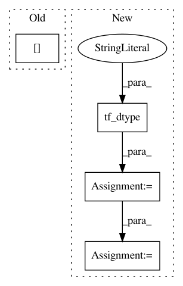

191035825a0b453ca11058f43c0beb6024241f5f,tensorforce/models/q_demo_model.py,QDemoModel,tf_demo_loss,#QDemoModel#Any#Any#Any#Any#Any#Any#,165
Before Change
num_actions = 2
else:
num_actions = self.actions_spec[name]["num_actions"]
one_hot = tf.one_hot(indices=actions[name], depth=num_actions)
ones = tf.ones_like(tensor=one_hot, dtype=tf.float32)
inverted_one_hot = ones - one_hot
After Change
// Zero for the action taken, one for all other actions, now multiply by expert margin
if self.actions_spec[name]["type"] == "bool":
num_actions = 2
action = tf.cast(x=action, dtype=util.tf_dtype("int"))
else:
num_actions = self.actions_spec[name]["num_actions"]
one_hot = tf.one_hot(indices=action, depth=num_actions)
ones = tf.ones_like(tensor=one_hot, dtype=tf.float32)
inverted_one_hot = ones - one_hot
// max_a([Q(s,a) + l(s,a_E,a)], l(s,a_E, a) is 0 for expert action and margin value for others
state_action_values = self.distributions[name].state_action_value(distr_params=distr_params)
state_action_values = state_action_values + inverted_one_hot * self.expert_margin
supervised_selector = tf.reduce_max(input_tensor=state_action_values, axis=-1)
// J_E(Q) = max_a([Q(s,a) + l(s,a_E,a)] - Q(s,a_E)
delta = supervised_selector - state_action_value
action_size = util.prod(self.actions_spec[name]["shape"])
delta = tf.reshape(tensor=delta, shape=(-1, action_size))
deltas.append(delta)
loss_per_instance = tf.reduce_mean(input_tensor=tf.concat(values=deltas, axis=1), axis=1)
loss_per_instance = tf.square(x=loss_per_instance)
In pattern: SUPERPATTERN
Frequency: 4
Non-data size: 4
Instances
Project Name: reinforceio/tensorforce
Commit Name: 191035825a0b453ca11058f43c0beb6024241f5f
Time: 2018-01-21
Author: aok25@cl.cam.ac.uk
File Name: tensorforce/models/q_demo_model.py
Class Name: QDemoModel
Method Name: tf_demo_loss
Project Name: reinforceio/tensorforce
Commit Name: d1ae17e7f6a0916add0d2b4521acab3fbb42650e
Time: 2020-03-08
Author: alexkuhnle@t-online.de
File Name: tensorforce/core/models/model.py
Class Name: Model
Method Name: tf_initialize
Project Name: reinforceio/tensorforce
Commit Name: a3fe8bdf1c484e390dfe3947cc395372c0187589
Time: 2019-02-06
Author: alexkuhnle@t-online.de
File Name: tensorforce/core/distributions/beta.py
Class Name: Beta
Method Name: tf_sample
Project Name: reinforceio/tensorforce
Commit Name: da73514fe9af58f35dc62a5c0c91ab60fd55f134
Time: 2019-01-18
Author: alexkuhnle@t-online.de
File Name: tensorforce/core/models/model.py
Class Name: Model
Method Name: api_act